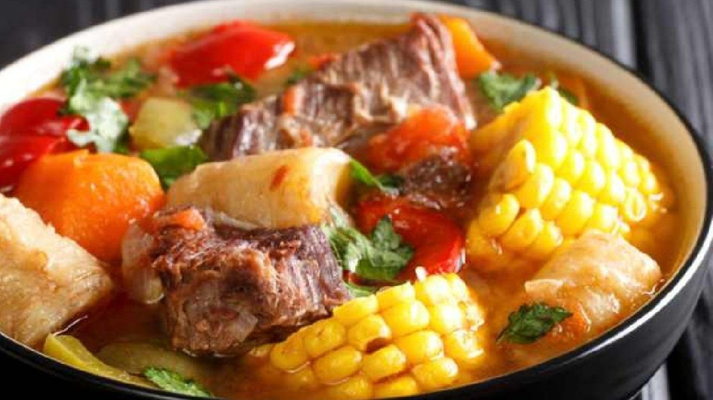

A warm and comforting meal, perfect for cold days and family lunches.
Description
Puchero is a traditional Argentine stew with Spanish origins. It is a simple dish made by boiling meat and vegetables together. This recipe became popular because it is filling, nutritious, and easy to prepare. The puchero is usually served in two parts: first the broth, and then the meat and vegetables.
Ingredients
A puchero consists of meat, vegetables, and legumes cooked in water. Below are the ingredients needed for this recipe (5 servings):
- roast beef 2kg
- oil 3 tablespoons
- Swiss chard leaves 3
- garlic 3
- onions 400g
- carrots 300g
- sweet potatoes 500g
- potatoes 500g
- zucchini 250g
- corn on the cob 300g
- leek 200g
- cabutia 600g
- salt to taste
- pepper to taste
- parsley 20g

Steps
- Heat a large pot and add the oil. Peel the garlic cloves, lightly crush them with a knife, and add them whole to perfume the meat. Season the meat with salt and pepper and sear it on both sides. At the same time, heat water in another pot.
- Peel, wash, and cut the vegetables into large pieces, except for the leek, which should be sliced.
- Once the meat is sealed, add about 3 liters of hot water (keep extra hot water in case it is needed), along with finely chopped parsley, the sliced leek, whole Swiss chard leaves, and the onions cut in half.
- Cover the pot and let it boil for 30 minutes. Then add the corn sliced into rounds and the carrots.
- Cover and cook for another 20 minutes.
- Add the potatoes, sweet potatoes, and squash, all peeled and cut into large pieces. Cover the pot again and cook until the potatoes and sweet potatoes are tender.
- Serve the meat and vegetables hot, without the broth. Drizzle some oil over the meat and vegetables on the plate, and serve the broth separately. Although traditionally served this way, Argentine puchero can also be enjoyed with the broth, depending on personal taste.